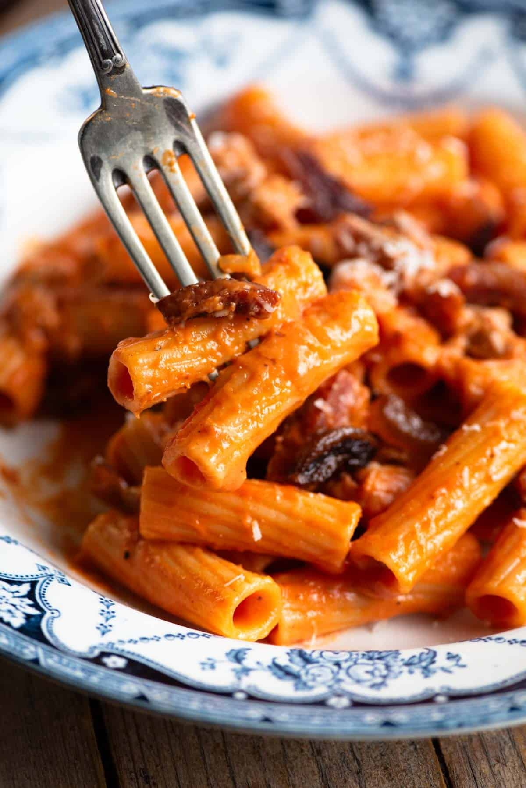

Home
Pasta Alla Zozzona

Description
This recipe will make several recipies to our pasta alla carbonara recipe. I would recommend making
that first to learn the principles of this style of pasta. Pasta alla zozzona is essentially a carbonara recipe and tomato meat
sauce recipe combined. It's delicious, more filling, and less rich than a carbonara sauce, and uses sausage instead of pancetta.
I perfer something more of a white wine sauce so this recipe will optionally contain the information to make the sauce this way.
This recipe makes about two servings.
Ingredients
Tomato Meat Sauce
- 1 package Italian Sausage
- 1 can Tomato Paste
- 1 Shallot, diced
- 2 cloves Garlic, diced
- Olive oil for cooking
- 1/2 tsp red pepper flakes
- 1/2 tsp italian seasoning
- optional 1/4 cup White Wine
- Salt and Pepper to taste
Carbonara Sauce
- 2 Whole Eggs plus 1 Egg Yolk
- 1/2 cup grated Parmesan Cheese
- 1/2 tsp ground Black Pepper
Assembly
- 2 portions fresh or dry pasta, as described in our carbonara recipe
- 1 tbsp cold Butter
- 1/3 cup pasta water taken right after cooking pasta
Steps
Zozzona Sauce
-
Begin by browning the sausage in olive oil over medium high heat. Once browned, add garlic, shallot and tomato paste.
Continue cooking until fragrant, and tomato paste loosens. Then add red pepper flakes and italian seasoning. Add water
and/or white wine until a thick sauce is formed.
Carbonara Sauce
-
Make the carbonara sauce egg mixture as described before in our pasta alla carbonara recipe.
Vigorously beat together eggs, parmesan and black pepper.
Assembly
-
Into a quart of boiling water, add 2 tsp salt. Boil pasta for time specified on the package, or for about 90 seconds for fresh pasta.
Add pasta to a separate large bowl. Take 1/3 cup of water from the boiled pasta and add to the carbonara sauce mixture, making sure to beat vigorously and continuously for
about 30 seconds after all the water is added.
-
Add the carbonara sauce to the pasta and mix continuously for another 30 seconds. At this point add the tomato meat sauce and
cold butter to the bowl and mix. Now adjust for taste with salt, pepper and parmesan cheese. To serve, warm 2 plates or bowli.
I perfer the microwave for this, but any method should work. I hope you enjoy!